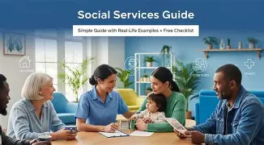

Bienvenue à l’Hôpital Universitaire de Delmas
Des soins de qualité pour vous et votre famille
L’Hôpital Universitaire de Delmas, un établissement de santé engagé à offrir des soins de qualité, accessibles à tous, dans un environnement sûr et humain. Notre équipe médicale et administrative travaille chaque jour pour garantir votre bien-être et celui de votre famille. Donnez vie à nos patients.
Notre mission
Offrir des soins de santé de qualité, respectueux de la dignité humaine, en mettant le patient au centre de toutes nos actions.
Prendre rendez-vousNos services
Pourquoi nous choisir ?
Notre hôpital offre un service rapide, un personnel qualifié et des équipements modernes pour garantir votre bien-être.
Nos spécialités en détail
Pharmacie hospitalière
La pharmacie hospitalière assure la gestion, le stockage et la distribution sécurisée des médicaments. Elle veille à la qualité et à la traçabilité des traitements.
.webp)
Urgences
Service 24h/24 pour la prise en charge immédiate des situations graves : accidents, douleurs aiguës, détresse vitale. Évaluation rapide et orientation.
.webp)
Bloc opératoire
Équipé de haute technologie, le bloc opératoire accueille les interventions chirurgicales dans des conditions strictes d’hygiène et de sécurité.

Service social
Accompagnement des patients et familles face aux difficultés sociales, économiques ou administratives liées à la maladie.